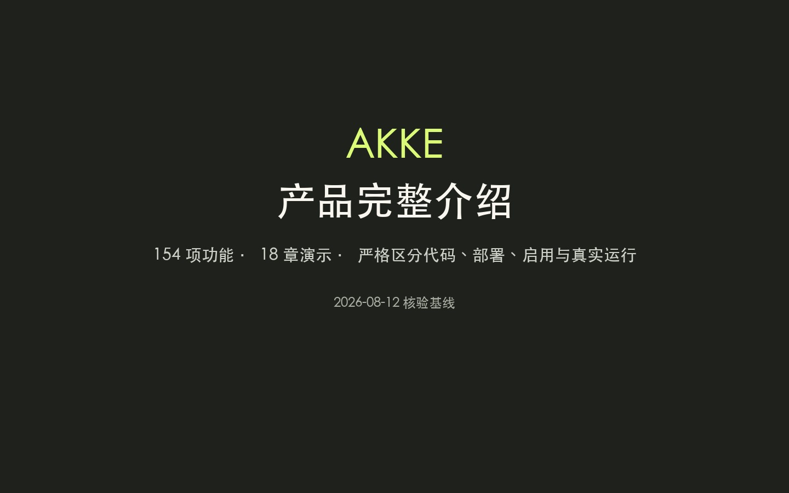

发现商机
号源、视频、评论、意向分类和客户旅程。
从公开内容发现商机，到短视频生产、企微承接、沉默客户跟进与企业知识管理。自动链由权限、开关、队列和审核闸门约束；不同通道的人审程度并不相同。

完整产品演示
页面级录制，不包含桌面、会议窗口或登录凭据；鼠标黄环用于提示关注位置。旁白为云希声线，字幕由同一次语音合成的逐词时间轴生成。
系统全景
Akke 把公开线索、内容生产和私域经营连起来；统一工作台负责部分配置、控制与审核，企业大脑为多个业务模块提供可追溯事实。
号源、视频、评论、意向分类和客户旅程。
参考片拆解、真实素材、配音、口型、字幕和合成。
门店事实、销售人设、对话记忆、报价和人工接管。
客户历史、未来计划、案例、知识、权益和停止条件。
动作闸门、阶段检查、效果回写和定向返工。
产品板块
把关键词、号源、视频、评论和客户身份串起来，用意向、城市、时效和具体程度缩小范围，再把触达和回复放回同一条旅程。
先准备业务、素材和出镜人，再选参考片、锁定品牌资产，完成改稿、配音、口型、B-roll、字幕和成片检查。
门店资料、金牌案例、模拟评分、话术规则和服务插件构成训练面；接待漏斗、问题聊天和 FAQ 构成日常运营面。
活动、知识海报和量房券先过资料与名额检查；客户池同时展示历史与未来七次计划，拒绝、成交或选择别家时停止自动联系。
文件被解析并匹配知识积木；行业参考与门店承诺分开；冲突由负责人裁决，未确认内容暂停使用，发布前检查来源、隐私和边界。
工作台记录待审、批准、发出、见效和否决；不同执行器仍有自己的队列、开关与发送条件，不能把统一审核台概括成全系统唯一入口。
全部功能
功能目录同时覆盖用户页面、后台自动化、执行层、运维能力以及未上线和退役边界。先看状态，再判断能否演示或对外承诺。
能力边界
下面这些限制直接决定产品介绍是否可信，也决定演示时哪些按钮不能点。
独立 AI Reviewer 从未部署。 当前可说的是阶段自检、经理看片和审核记录；反馈通道存在，但本次未核验自动返工闭环。
本次未连接或核验企微席位登录与执行进程；工作台里的漏斗与规则不能替代云电脑运行态证据。
正式主线只保留真人讲解 + B-roll 的 Style A。Style B/C 已封存；场景替换仍是试验线，不能放进线上可选能力。
抓取、重分析、消息批准、客户转交、规则应用、召回启用、冲突裁决和知识发布都会写库、计费或触达真实客户，演示只读。
Style A 的预算档不包含所有模型、机器、返工和运维成本。产品能展示阶段费用和预算闸，但不承诺每条片总成本永远固定。
代码已合并、线上已部署、开关已启用、真实业务 E2E 跑通是四件事。健康检查和定时声明只分别证明其中一小部分。
页面写每日 3 户，后台硬闸是每日 1 户；“免费量房”又与当前企微禁词冲突。 知识海报和量房券均为未启用草稿，必须先统一口径和共享配置。
金牌案例当前只检查 1/10，模拟训练只完成 1/97。页面可以展示训练方法，不能据此说机器人已经完成学习。